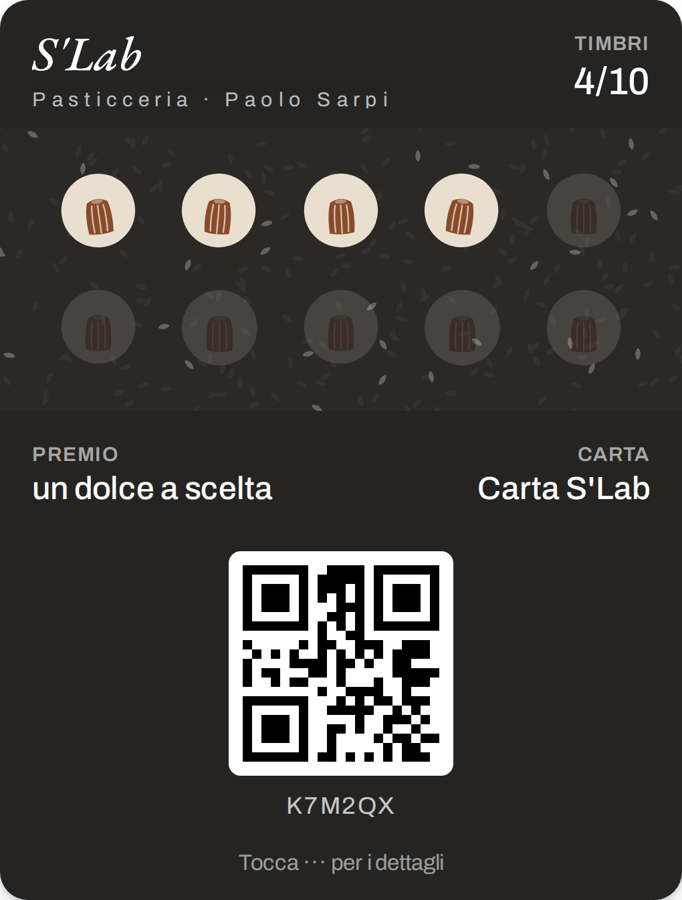
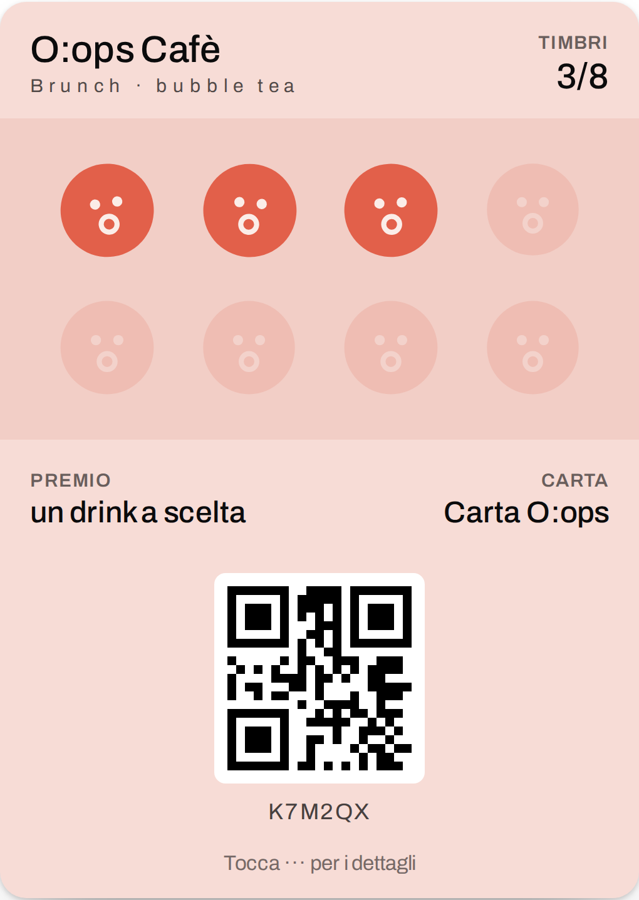
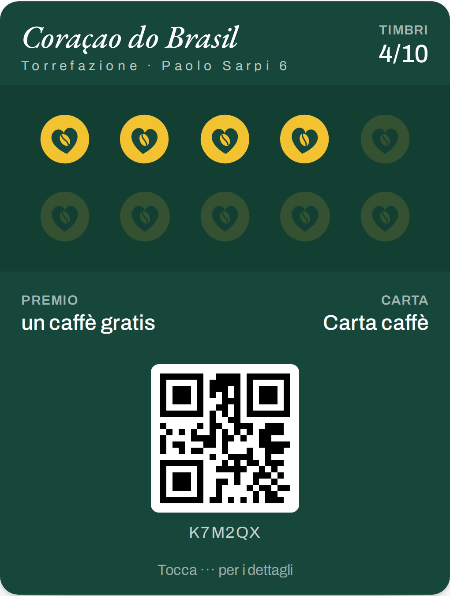
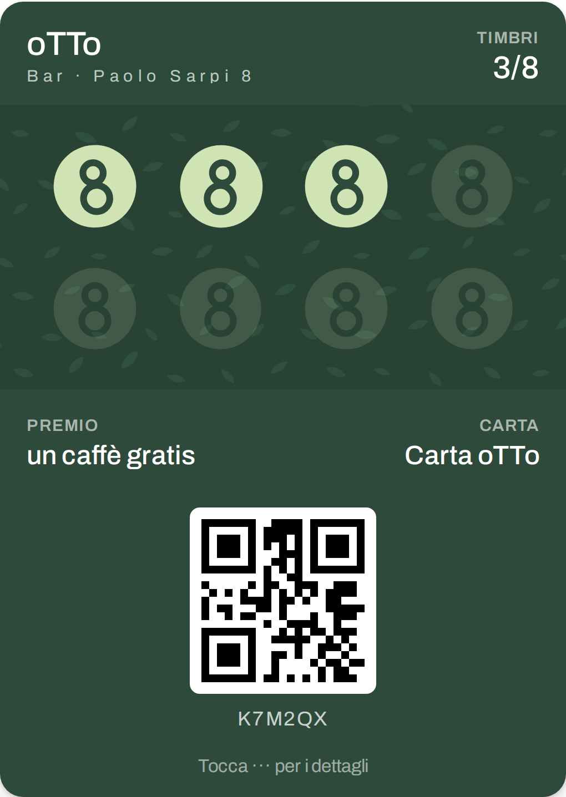
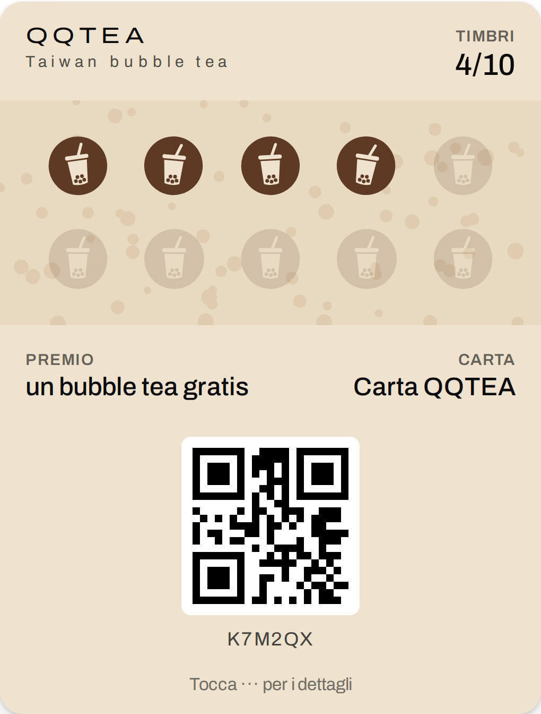

Via Paolo Sarpi · five cafés · one afternoon
Five independent places where customers come back every week and live on their phones. Walk them in this order (house numbers go up), on a weekday between 15:00 and 17:00: not at lunch, not at the weekend. About 15 minutes of walking in all.

Chinese bakery with French pastry and Japanese milk bread (azuki and black sesame buns, a rice-flour canelé). There's often a queue and a young crowd.
Why they'd say yes: they don't need more people at rush hour; they want the regulars back on quiet afternoons. That's what the messages are for.
Ask: The Infatuation says the owner also runs Parigi Dolci (Via Messina). If so, offer one card for both shops; Plus covers up to 3.

Opened in 2023: brunch, coffee, bubble tea, dalgona. Young, Instagram crowd.
Why they'd say yes: still building their regulars, and new places are the most open to new tools. Show them a reel and the launch post they would get.

Coffee shop and roastery since the 1970s, espresso from about €1, beans to take home. Now run by Chinese owners. Open 7:00 to 19:30, closed Sunday.
Why they'd say yes: daily espresso regulars fill a card fastest. Look for paper stamp cards at the till: "your paper card, on the phone" is the easiest pitch. A second card for bags of beans is an extra.

Bar, restaurant and coworking: big shared tables, a wall of plants, weekend brunch, aperitivo. Older listings say it opens at 10:00 and on Monday only in the evening: check first.
Why they'd say yes: people work there all day. A coffee card with 8 stamps (oTTo, number 8) and maybe a second card for coworking days.

Taiwanese bubble tea, many locals' favourite in Milan. Bubble tea people come back every week, and "10th drink free" is normal there.
Why they'd say yes: CoCo, The Alley and Chabaidao on the same street are chains with their own apps. Timbro gives QQTEA the same thing for €19.
At the counter
"Buongiorno! Abito qui in Sarpi. Ho creato Timbro, la carta fedeltà nel Wallet del telefono, senza app. Ho già preparato una proposta per voi: posso mostrarvela? Ci vuole un minuto."
(Good afternoon! I live here in Sarpi. I made Timbro, the loyalty card in the phone's Wallet, no app. I've already made a proposal for you: can I show you? It takes a minute.)
From web guides (Milano Segreta, The Infatuation, Scatti di Gusto, ZERO, Time Out, Mapstr, Corner, CiboToday). Hours, addresses and owners were not confirmed with the places: check before you go.